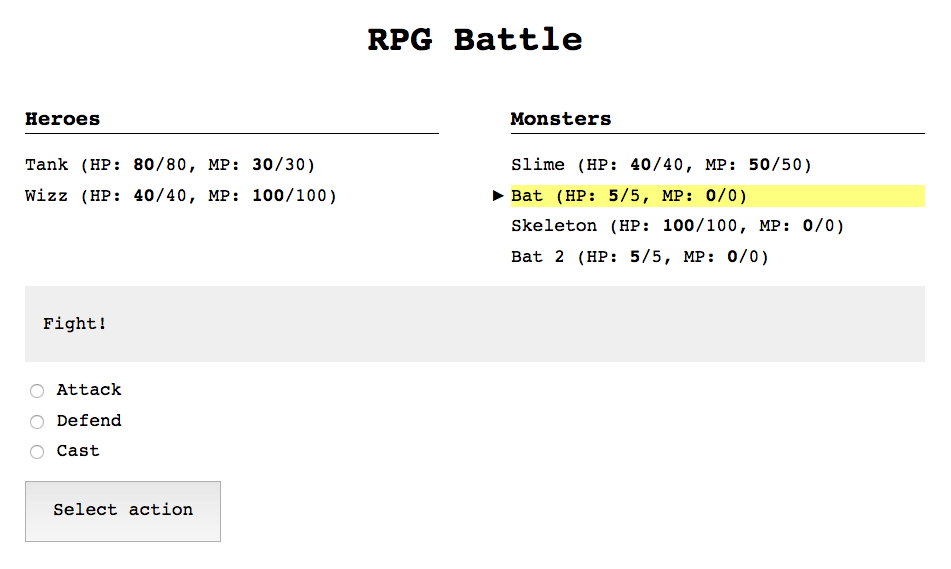

Cliente web para batallas RPG
A continuación se expone la práctica propuesta para esta unidad. Tras leer este enunciado, se recomienda encarecidamente consultar la guía de la práctica para su realización.
Enunciado
La práctica consiste en implementar un cliente visual (en este caso, una página web) para el juego de batallas de la práctica de la unidad anterior.

Como punto de partida, se ha provisto de un href="start-here.zip" target="_blank">esqueleto de proyecto</a> con los siguientes archivos:
index.html: código HTML de partidastyles.css: hoja de estilojs/main.js: el archivo de partida JavaScriptjs/rpg.js: un archivo con el código de la librería de batallas de la práctica. También puedes usar tu propio código (consulta la sección de Adaptación del código de la práctica anterior).
En este código inicial se incluye ya implementado lo siguiente:
Carga desde el archivo HTML de los recursos JavaScript y CSS.
Esqueleto HTML con una interfaz ya hecha. Puedes modificar este HTML para añadir más cosas, o cambiar elementos de la UI que no te convenzan, pero no es obligatorio.
Creación de una instancia de
Battle, así como el setup de las parties y la subscripción a los eventos más relevantes. La información de dichos eventos se imprime por consola (lo cual puedes eliminar/modificar a tu gusto).
Hay que implementar las siguientes features:
Mostrar los personajes de ambas parties, con sus ID's, puntos de vida y de maná.
Marcar qué personaje está seleccionado, cambiando su estilo o añadiendo un carácter especial (p.ej:
*).Marcar qué personajes están muertos, cambiando su estilo o añadiendo un carácter especial (p.ej:
✝).Implementar el menú de batalla con sus siguientes estados: selección de acción, selección de objetivo y selección de hechizo.
Mostrar información de qué ha pasado cada turno (p.ej
Bat attacked Wizz, but missed).Mostrar un mensaje al final de la batalla indicando cuál es el bando ganador.
Para implementar estas features básicas, es recomendable seguir el procedimiento marcado por la guía de la práctica.
Otras características opcionales que se podrían implementar, serían:
En el menú de selección de objetivo, mostrar en un color diferente los personajes de cada party.
Al terminar la batalla, mostrar un botón o enlace para empezar una nueva (esto se puede hacer simplemente recargando la página).
Crear la composición de una o ambas parties de manera aleatoria.
Adaptación del código de la práctica anterior
En la versión actual de JavaScript no hay ningún mecanismo para gestionar módulos (por ejemplo, usando la función require como en Node). Es por esto que no podemos utilizar ni require ni module.exports.
Además, ciertas partes que forman parte de la librería estándar de Node, como el módulo events para implementar eventos, no forman parte del estándar JavaScript.
Hay una herramienta, Browserify que nos permite transformar módulos de Node –con sus dependencias– en código que funciona en el browser. También incluye polyfills.
Instrucciones
Opción A: usar el código propio
Si has acabado la práctica anterior, puedes utilizar ese código en esta. Sigue los pasos que hay a continuación para adaptar ese código de Node a código que puedas ejecutar en el navegador.
Como vamos a necesitar dos módulos,
Battleyentities(junto a sus dependencias), tenemos que crear un archivo "raíz" con esos dos. Crea en la raíz del directorio de la práctica anterior un archivoexport.jscon el siguiente contenido:module.exports = { "Battle": require('./src/Battle.js'), "entities": require('./src/entities.js') };De nuevo en la raíz del directorio de la práctica anterior, instala Browserify con npm:
npm install --save-dev browserifyComprueba que el archivo
package.jsonse ha modificado y que ahora aparece Browserify listado dentro dedevDependencies. Por ejemplo:"devDependencies": { "browserify": "^13.1.0" }Edita
package.jsonpara añadir un comando de script más, que ejecutará Browserify:"scripts": { "bundle": "browserify export.js --standalone RPG > rpg.js" }Ejecuta dicho comando, que generará un archivo
rpg.jsen el raíz de ese directorio.npm run bundleAhora puedes copiar
rpg.jsal directoriojsde la práctica 2. Cuando se cargue el archivo con una etiqueta<script>en el navegador, habrá un objeto globalRPG, con dos propiedades:entitiesyBattle.
Opción B: usar una implementación de terceros
Puedes emplear el archivo rpg.js –incluido ya en el código fuente de partida–, que contiene una implementación de la práctica anterior.
Auto-reload del navegador
Si quieres que el navegador automáticamente recargue la página cuando modifques un archivo, lo puedes conseguir fácilmente con Browsersync. No es obligatorio, pero quizás te resulte más cómodo programar así.
Puedes instalar Browsersync de manera global (para así utilizarlo desde cualquier directorio) vía npm con el flag -g:
npm install -g browser-sync
Una vez instalado, puedes lanzarlo en el directorio raíz de la práctica. El siguiente comando ejecuta browsersync, lanza un servidor local y activa la auto-recarga del navegador cuando haya algún cambio en los ficheros HTML, CSS o JavaScript:
browser-sync start --server --files="*.html,js/*.js,*.css"
Para más información, consulta la documentación de Browsersync.